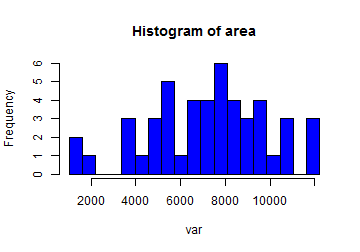

Shiny app: "Exploring Datasets"
Main purpose
To make a very basic exploration of some R datasets.
Ariel
To make a very basic exploration of some R datasets.
You can select among the following datasets:
c("rock", "pressure", "cars", "mtcars", "iris")
[1] "rock" "pressure" "cars" "mtcars" "iris"
You can select how many obs to see. For example, the default values of the app will show the same output as the following code:
head(rock)
area peri shape perm
1 4990 2791.90 0.0903296 6.3
2 7002 3892.60 0.1486220 6.3
3 7558 3930.66 0.1833120 6.3
4 7352 3869.32 0.1170630 6.3
5 7943 3948.54 0.1224170 17.1
6 7979 4010.15 0.1670450 17.1
Finally, you can select a variable from the dataset to see a histogram, and determine the bins in the histogram. The default values in the app will show the same output as the following code:
var <- rock$area
hist(var, breaks = seq(min(var), max(var), length.out = 20),
main ="Histogram of area", col = "blue")

Note: This part (selecting the variable) is actually the motivation for the app, because it was far from obvious to me how to do it. Take into account that the options are available only after choosing the dataset.